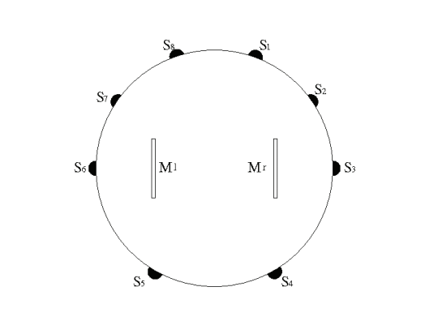
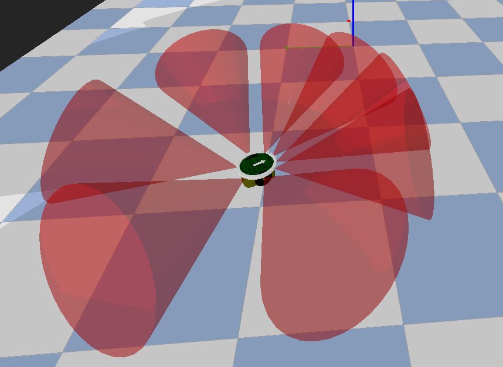
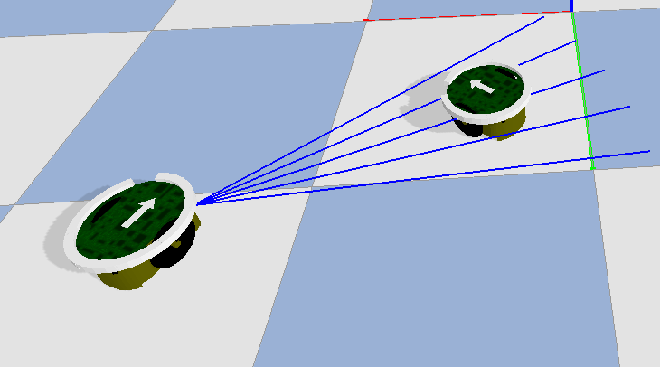
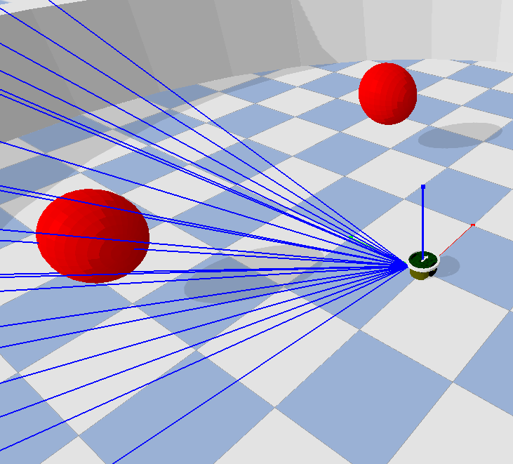

Sensors¶
Overview¶
Sensors are electronic devices that allow robots to perceive, in most cases, locally the environment. There are a variety of sensors that
measure different aspects of the robot surroundings. For instance, the distance sensor estimates the distance and direction of an obstacle
in the robot neighborhood.
From a formal mathematical perspective, the sensor acts as a mapping between the overall
global environment/world state (\(s(t)\)) and a partially observable state (\(\phi(t)\)) relative to the robot and constrained its surroundings.
Depending on the sensor, the reading can be an scalar value (e.g. ground sensor), a vector (e.g. distance sensor or other directional sensors)
or even a matrix or tensor (e.g. camera sensor).
All the sensors inherit from the base class mereli.sensors.Sensor. Moreover, directional sensors
allow a decoupled sensing of the environment in multiple directions (resulting in a vector of direction measurements instead of an scalar reading).
Directional sensors inherit from the class mereli.sensors.DirectionalSensor.
The sensors whose simulation is currently implemented in the simulator are the gathered in the following table:
Reference Name |
Python Class |
Description |
|
|
Directional Sensor for estimating the distance to nearby solid objects. |
|
|
Directional Sensor for estimating the light intensity. |
|
IRCommunicationReceiverBufferedIRCommRX |
Directional IR based communication receiver. |
|
|
Sensor that detects the presence of a ground area underneath the robot. |
|
|
High level directional sensor for detecting nearby objects
of a precise color.
|
|
|
Sensor for measuring the position state of the joints of the robot. |
|
|
Sensor for measuring the velocity state of the joints of the robot. |
|
|
Sensor for detecting if the robot is colliding with a solid object. |
|
|
High level sensor for obtaining the absolute position of the robot. |
|
|
High level sensor for obtaining the absolute orientation of the robot. |
|
|
High level sensor for obtaining the absolute position of the neighbors. |
|
|
Warning
The own_position_sensor, own_orientation_sensor and neighborhood_pos_sensor are sensors that break the locality and
partial observability principals by reading high level absolute information such as the robot coordinates or absolute heading orientation.
Creating Sensors¶
Sensors have to be enabled by the robot controller in order to be used afterwards. In other words, robots have a pool of sensors they can use and the controllers specify the subset of them that will be harnessed in each experiment. For instance, a single robot light pursuit experiment only uses the light sensor while an obstacle avoidance task only employs the distance sensor. The following extract of code shows how to add sensors one by one to an existing controller object (instantiation not shown). In the example, both the distance sensor and the light sensor are activated with the shown parameters:
Example 2.1:
>>> ctlr.add_sensor("distance_sensor", {"n_sectors" : 8, "range" : 1})
>>> ctlr.add_sensor("light_sensor", {"n_sectors" : 8, "range" : 2})
The Controller.add_sensor method receives both the reference name of the sensor (do not confuse with the class name,
see table above) and the parameters of the sensor (the accepted parameters are the same the ones in sensor class,
which can be consulted in the reference API).
Alternatively, multiple sensors can be activated at once using the Controller.add_sensors_from_dict method. It receives
a dict with the entire sensor configuration as in the following example:
Example 2.2:
>>> sensor_dict = {
>>> "distance_sensor" : {"n_sectors" : 8, "range" : 1},
>>> "light_sensor" : {"n_sectors" : 8, "range" : 2}
>>> }
>>> ctlr.add_sensors_from_dict(sensor_dict)
Notice that the previous code extracts only enable the sensors to be read by the robot’s controller. The actual creation/instantiation
of the sensors is accomplished when calling the robot class constructor. It is also possible to create the sensors by calling the reset
method of the robot if they have not been previously created for whatever reason (so that the sensors are not instantiated twice).
The following code examples clarifies this issue:
Example 2.3:
>>> # Activates the distance sensor.
>>> ctlr.add_sensor("distance_sensor", {"n_sectors" : 8, "range" : 1})
>>> # Creates an actual distance sensor object.
>>> robot = Epuck([0,0,0], 0, controller=ctlr)
>>> # Does not create the distance sensor again because it was instantiated in the
>>> # previous line.
>>> robot.reset()
>>>
>>> # Activates the light sensor.
>>> robot.controller.add_sensor("light_sensor", {"n_sectors" : 8, "range" : 2})
>>> # Creates an actual light sensor object.
>>> robot.reset()
Sensor instances belong to the robot class as an attribute of the class called Robot.sensors. This variable is a
python dict mapping sensor reference names to actual python sensor class instantiations. For example, the following code
block shows the content of robot.sensors after the executing of the Example 2.3:
Example 2.4:
>>> print(robot.sensors)
>>> {
>>> 'distance_sensor': <mereli.sensors.distance_sensor.DistanceSensor object at 0x000001153170F508>,
>>> 'light_sensor': <mereli.sensors.light_sensor.LightSensor object at 0x000001153170F4C8>
>>> }
Thereafter, once created, the sensors measurements are read by means of the Sensor.step method that must be
implemented in each sensor class. However, this method must not be called directly because it is the method
perceive of the class Robot the one responsible of directly reading all the sensor units. The method
Robot.perceive is similarly called by the Robot.step method at each simulation cycle. The different readings
of the enabled sensors are gathered to compose the current partially observable state (which is a dict mapping
sensor reference names to sensor reading vectors).
Directional Sensors¶
Directional sensors are a type of sensors that have independent sensing units for each of its sectors or coverage areas. The clearest example is the one of e-pucks or other similar mobile robots. In these cases multiple sensing units are placed at strategic points of the robot perimeter. Therefore, aside from having an independent measurement of what is happening on each sector, the robot can know the orientation from where an event was perceived. The following figure shows the orientations around the robot perimeter at which distance sensor’s sectors are located:

Notice that, in the figure, the e-puck is facing north. The orientation towards which a robot is facing (heading orientation) is denoted as \(\theta(t)\) along this documentation. Therefore, the orientations of the distance sensor’s sectors, relative to the robot heading orientation, are the following (starting from \(S1\) and thereafter iterating counter clockwise):
Note
The angles are expressed above just for clarification purposes. Within the code, all the angles and orientations are in radians.
The reference names of the directional sensors that are currently implemented are: distance_sensor, light_sensor, IR_receiver and
color_sensor.
In order to achieve a more realistic simulation of sensor, each sensing unit is attached to a physical link of the robot owning it. For instance, the following screenshot highlights the physical link mimicking the distance sensor electronic device.
Warning
******* FIGURA SEÑALANDO SENSORS *******
In this way, the sensor measurement is computed with respect to the established physical link (for computing distances, detecting obstacles, casting rays and so on). The mapping between physical links and sensors is accomplished within the URDF file of the robot (e.g. mereli/models/entities/epuck/epuck.urdf.xacro in the case of the Epuck robot). The syntax used within these URDF files has been designed by us as a non-standardized xml tag structure, as it can be observed in the following example:
Example 2.5:
>>> <sensor name="distance_sensor">
>>> <sector index="0">
>>> <parent link="IR0"/>
>>> <origin xyz="0 0 0" rpy="0 0 0.26179"/>
>>> <ghost link='ghost_cone_DS0'/>
>>> </sector>
>>> <sector index="1">
>>> <parent link="IR1"/>
>>> <origin xyz="0 0 0" rpy="0 0 0.78539"/>
>>> <ghost link='ghost_cone_DS1'/>
>>> </sector>
>>> <sector index="2">
>>> <parent link="IR2"/>
>>> <origin xyz="0 0 0" rpy="0 0 1.57079"/>
>>> <ghost link='ghost_cone_DS2'/>
>>> </sector>
>>> <sector index="3">
>>> <parent link="IR3"/>
>>> <origin xyz="0 0 0" rpy="0 0 2.61799"/>
>>> <ghost link='ghost_cone_DS3'/>
>>> </sector>
>>> <sector index="4">
>>> <parent link="IR4"/>
>>> <origin xyz="0 0 0" rpy="0 0 3.66519"/>
>>> <ghost link='ghost_cone_DS4'/>
>>> </sector>
>>> <sector index="5">
>>> <parent link="IR5"/>
>>> <origin xyz="0 0 0" rpy="0 0 4.71238"/>
>>> <ghost link='ghost_cone_DS5'/>
>>> </sector>
>>> <sector index="6">
>>> <parent link="IR6"/>
>>> <origin xyz="0 0 0" rpy="0 0 5.49778"/>
>>> <ghost link='ghost_cone_DS6'/>
>>> </sector>
>>> <sector index="7">
>>> <parent link="IR7"/>
>>> <origin xyz="0 0 0" rpy="0 0 6.0213"/>
>>> <ghost link='ghost_cone_DS7'/>
>>> </sector>
>>> </sensor>
As you can observe, there is an outer tag declaring the sensor, with the reference name of the sensor within the tag attribute name.
Thereafter, when the sensor is directional, there is a new tag per sector. Notice that in the case of the Epuck IR distance sensors, there are a
total of 8 sectors pointing to the previously mentioned orientations. The subtag inside the sectors called parent represents the physical link to
which the sensor is bonded. The link name, as established in the same URDF file, is set in the link attribute. Of course, the referenced link must
exist within the robot model. Regarding the origin tag, it sets the sensor positioning relative the parent link. For the moment, the attribute xyz is
not used at all. Nonetheless, the attribute rpy (standing for roll, pitch and yaw angles) settles the orientation of maximum sensitivity of the sector. Notice
that the angles (in radians) of the Example 2.5 equal the orientations in degrees mentioned before in this section. For the moment only the yaw angle is actually
parsed and used because it is sufficient for e-puck robots. However, in future upgrades, the idea is to use also the roll and pitch for designing the sensors of other
robots.
Warning
The sensor tags already mentioned are currently only processed and parsed for directional sensors. Nonetheless, the idea is to define any sensor of the robots and use the URDF to state the sensing equipment of robots. In this way, robot controllers could only make use of the sensors specified in the URDF file.
Todo
The definition of sensors within the model files is only implemented in the 3D URDF files. Due to its reduced relevance, it is currently in process in the case of the 2D JSON model files.
The last xml subtag inside the sector tag is the ghost tag. This part is critical for the execution/reading of some sensors and useless for others. Essentially, it assigns an existing physical link to the sector, acting as ghost object to detect obstacles. By a ghost object we refer to a generally low poly 3D model with is invisible and does not have collisions. Under the frame of sensors, its main purpose is to readily detect other objects inside the coverage area of the sensor. We will clarify this implementation below, as we introduce the available sensors. For instance, in the case of the distance sensor, a cone is used as ghost object in each of the 8 sectors. The cones try to approximate the sector sensing area by means of setting its dimensions according to the sensor aperture angle and the range. The following screenshot shows the ghost links of the distance sensor:

With this information in mind, most of the directional sensors use ghost links for their readings.
Distance Sensor¶
In order to understant the
underlying code, we will make use of the DistanceSensor.step method (code explained below):
Example 2.6:
>>> def step(self, neighborhood):
>>> reading = []
>>> # Collect the link ids of the ghost links of the sensor.
>>> g_ids = [self.sensor_owner.physics_client.physical_sensors['distance_sensor'][i]['ghost_link_idx'] for i in range(8)]
>>> # Request the ids of any object intersecting any of the ghost links
>>> # of the sensor owner (robot) to the physics engine.
>>> contact_points = self.sensor_owner.physics_client.get_contact_points(self.sensor_owner.id, ghost_ids=g_ids)
>>> # Iterate sensor sectors (i means sector index and ori means sector orientation (only yaw)).
>>> for i, ori in enumerate(self.directions(self.sensor_owner.orientation[-1])):
>>> # Filter out only the entities intersecting the ghost link of the i-th sector.
>>> tar_ents = [pt[0] for pt in contact_points if pt[1] == g_ids[i]]
>>> signal_strength = 0.0
>>> if len(tar_ents) > 0:
>>> origin = self.get_sensor_position(i) # Postion of the physical sensor link.
>>> # Cast a batch of rays within the coverage cone to detect obstacles and distances to
>>> # obstacles.
>>> ray_angles = np.linspace(-self.aperture/2, self.aperture/2, 5)
>>> ray_dests = [self.range*np.r_[np.cos(ang), np.sin(ang), 0] + origin for ang in ori + ray_angles]
>>> ray_res, ray_positions = self.sensor_owner.physics_client.ray_cast([origin]*len(ray_dests), ray_dests)
>>> if any(np.array(ray_res) != -1):
>>> rhos, phis = zip(*[(np.linalg.norm(pos - origin), phi) for idx, pos, phi in zip(ray_res, ray_positions, ray_angles) if idx != -1])
>>> signal_strength = np.mean([self.propagation(rho, phi) for rho, phi in zip(rhos, ray_angles.flatten())])
>>> reading.append(signal_strength)
>>> return np.array(reading)
The general steps accomplished within the are the DistanceSensor.step method are the following:
The identifiers of the ghost links bonded to the sensor sectors are collected as a list. Using these ghost link ids, it is requested to the physics engine to compute the contant points between the ghost links of the robot and any other entity. This will return a list with the identifier of all the objects that overlap with any of the robot ghost links. In turn, if an entity overlaps with a ghost cone, then it implies that the entity is within the sector sensing area.
We iterate through the different sectors of the sensor (8 in this case). The loop provides both the index of the sector (from 0 to N-1) and the corresponding sector orientation (only scalar yaw for the moment). Within the first lines inside the loop, the list
tar_ents, filters out the identifiers of the overlapping entities within the sector ghost cone of the i-th sector. If this new list is empty, the measured signal strength is zero (no entities within the sensing area of this sector). Otherwise, if there are entities within the sector area, then the signal strength reading is calculated (see below).Provided that
tar_entsis not empty, the computation of the distance and misalignment estimation to solid objects is accomplished as follows. The core idea is to cast a batch of rays, all of them with the same origin coordinates (sensor position) and with destination at equispaced points of a sector area of a total angle given by the sensor aperture and a radius given by the sensor range. The following screenshot displays the mentioned ray batchs of a sector:
In terms of code, the destination of the rays are computed as follows:
Using the function
np.linspace(-self.aperture/2, self.aperture/2, 5)we obtain 5 equispaced angle points inside the interval \([-A/2,\, A/2]\) rad, where \(A\) is the aperture of the sector in radians. Even though in the code we use a total of 5 rays, generically speaking lets denote \(N\) to the total number of rays casted from each sensor’s sector.Provided that \(R\) stands for the range in meters of the sensor and \(\mathbf{o}\) is the position of the physical sensor, the destination positions are
\[\begin{split}\mathbf{d} = \mathbf{o} + R \left(\begin{array}{c}\cos(\alpha_i)\\ \sin(\alpha_i) \end{array}\right)\end{split}\]where \(\alpha_i, \, \forall i\in\{1,\,\dots,\,N\}\) are the angles previously computed using
np.linspace.
The cast of the rays is accomplished by the physics engine, returning both a list of the ids of the fist entity intersecting each ray (or -1 is no obj was hitted) and the position of the intersection to the first intersecting solid object.
Using the information provided by the ray cast, the signal strength is computed using the Euclidean distance between the hit position and the ray’s origin (\(\mathbf{o}\)) and the misalignment (using \(\alpha_i\) directly). The final reading of the sector is:
\[\phi_j(t) = \frac{1}{N_{hit}}\sum_{i=1}^{N_{hit}-1} \exp\left\{-0.7\, \rho_i(t) - \alpha_i^2(t)\right\}\]This operation essentially estimates the signal strength based on an exponential decaying model. This propagation model is defined at the python class
mereli.sensors.utils.propagation.ExpDecayPropagation. Other propagation models can be used by defining the corresponiding propagation class and attaching it to the sensor as the propertyself.propagation.
Light Sensor (old implementation)¶
The light sensor enables the sensing of the light intensity resulting from the emission of luminous
WorldObjects (e.g. LightSource). It is a directional sensor, so that it is partitioned into multiple sectors that provide independent measurements
of their sector coverage and at the corresponding sensing orientation. The orientations of the sectors are exacly the same as in the distance sensor.
The light sensor is sensitive to light of a precise color, which can be set through a class argument.
The implementation of the LightSensor.step method is an adaptation of the DistanceSensor.step. Even though it is slightly more complex, we
here only expose the main differences with respect to the distance_sensor. Firslty, the ghost links of the light sensor are different that those of the
distance sensor. In this case, they are cones with the same origins and axes but with greater generatrix and aperture. Additionally,
after obtaining the overlapping entities, we also verify if they emit light of the color towards which the light sensor is sensitive.
This verification is accomplished using the attribute luminous_objects of the physics engine, which is a dict storing which entities emit light
and the color of the light. If there are no entities that emit light within the sector sensing area, the reading of the sector will be zero even if there are
other kind of obstacles. Another major difference is related to the rays that are casted to compute distances. In this case, we cast rays with
destination equispaced spherical sector. An example of the casted rays can be checked in the following screenshot:

Note
The explanation on how to compute the spherical grid of ray destiantions is a little bit complex. We provisionally omited it for the moment.
As in the distance_sensor, the light sensor uses the same exponential decaying propagation model but with different coeficients: